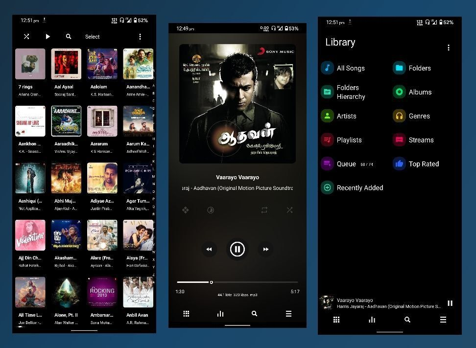

Why Poweramp is my favourite music player...
രണ്ട് കാര്യങ്ങളാണ് പ്രധാനമായും ഉള്ളത്.
1. Audio Engine
2. Customisation
• വളരെ powerful ആയ audio engine ആണ് Poweramp ന്റേത്.
mp3, mp4/m4a/alac/aac, ogg, opus, wma, flac, wav, ape, wv, tta, mpc, aiff, dsd, mka, mpga, tak, flv തുടങ്ങി m3u, m3u8 playlist streaming വരെ സപ്പോർട്ട് ചെയ്യുന്നുണ്ട്.
Custom presets apply ചെയ്യാൻ പറ്റിയ 10 band graphical equaliser, Bass & treble adjustment, stereo expansion, mono mixing, പിന്നെ ഉപയോഗിക്കുന്ന ഫോണിന്റെ hardware അനുസരിച്ച് High resolution & High dynamic deep bass ഓഡിയോ കിട്ടാൻ DVC (Digital Volume Control) സപ്പോർട്ട്.
Headset ഒക്കെ വെച്ച് flac music കേൾക്കുമ്പോ മറ്റുള്ള music player apps നെ അപേക്ഷിച്ച് നല്ലപോലെ വ്യത്യാസം feel ചെയ്യുന്നുണ്ട്.
(Poweramp നു പുറമെ Poweramp Equalizer ഉപയോഗിച്ച് Spotify ഒക്കെ ഇങ്ങനെ കേൾക്കാം.)
പിന്നെ crossfade, gapless playback, audio info, tag editing തുടങ്ങി മറ്റു music player apps ൽ ഉള്ളതുപോലുള്ള സൗകര്യങ്ങൾ.
• Customisation
കൂടുതൽ ആളുകളെയും poweramp ൽ നിന്ന് അകറ്റി നിർത്താൻ കാരണമായ ഒരു കാര്യം അതിന്റെ UX ആണ്. പ്രത്യേകിച്ച് poweramp ന്റെ default ആയുള്ള wave seekbar style ഒക്കെയുള്ള main screen.
മിനിമൽ UI താല്പര്യപ്പെടുന്നവർക്ക് പെട്ടെന്നൊന്നും ഇഷ്ടപ്പെടാൻ വഴിയില്ലാത്ത സംഗതി. പക്ഷേ, Poweramp 3rd party skins സപ്പോർട്ട് ചെയ്യുന്നുള്ളതുകൊണ്ട് app face വലിയ രീതിയിൽ നമുക്ക് customize ചെയ്യാൻ കഴിയും. (ഞാൻ ഉപയോഗിക്കുന്നത് Luminous Black എന്ന skin ആണ്.)
മാത്രമല്ല ഉള്ളിലേക്ക് പോകുമ്പോൾ, album, folders, artist ടാബുകൾ തമ്മിൽ swap ചെയ്യുന്ന swiping gesture animations ഒക്കെ ഏറ്റവും ഇഷ്ടപ്പെട്ട കാര്യങ്ങളാണ്.
👉 Install Poweramp from Play store
നിങ്ങളുടെ ഫേവറേറ്റ് offline music player ഏതാണ്?
-DeOn-
Related articles:
• Poweramp ൽ എങ്ങനെ മലയാളം റേഡിയോ ചാനലുകൾ കേൾക്കാം?
• Spotify vs Resso vs YouTube Music. Which is the best?